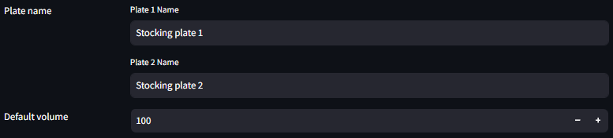
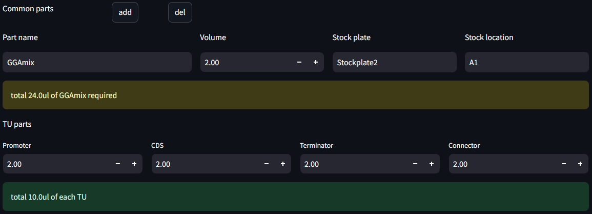
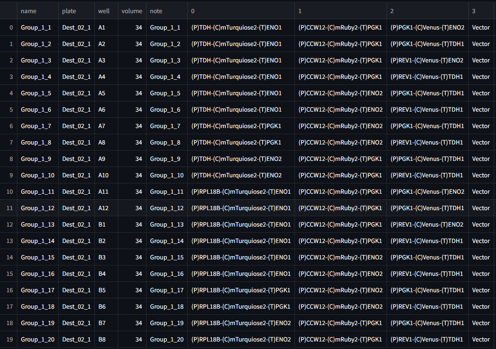

Protogen
Protogen은 Opentrons OT-2 및 Janus 로봇 시스템을 위한 액체 취급 프로토콜 자동화 Streamlit 어플리케이션입니다. DNA 조립을 위한 프로토콜을 생성하고, 사용자가 직관적으로 손쉽게 구성 요소, 볼륨 및 웰 위치를 정의할 수 있도록 지원합니다.
Features
- Excel 기반 sourceplate 로드
- Effimodular 실험 디자인
- OT-2 및 Janus 프로토콜/mapping 자동 생성
- 필요한 볼륨 및 plate 피드백
Installation
protogen은 python 3.9 에서 작성되었습니다.
pip install streamlit pandas opentrons openpyxlUseage
다음 명령어로 실행
streamlit run protogen.py1. 파일 업로드 (Input 파일 형식)
Protogen은 Excel 파일(.xlsx)을 입력으로 사용합니다. 각 시트(sheet)에는 96-well 플레이트 형식의 테이블이 포함되어 있으며, 각 셀에 해당 위치의 구성 요소 이름이 기록되어 있어야 합니다.
| 1 | 2 | 3 | … | 12 | |
|---|---|---|---|---|---|
| A | (P)1 | (C)1 | (T)1 | ||
| B | (P)2 | (C)2 | (T)2 | ||
| C | (P)3 | (C)3 | (T)3 | ||
| … | |||||
| H | (P)8 | (C)8 | (T)8 |
- A1, B1, C1 등 각 웰에는 각 TU Parts(Promoter, CDS, Terminator 등)의 이름이 입력됩니다.
- 사용되지 않는 well은 비워 놓습니다.
- 각 Parts는 이름 앞에 헤더(P, C, T, N)으로 구분합니다. 이를 통해 각 Part의 위치를 자동으로 인식합니다.
- 이름이 같은 Part는 동일한 Part로 인식합니다.
| Header | Part |
|---|---|
| (P) | Promoter |
| (C) | CDS |
| (T) | Terminator |
| (N) | Connector |
2. 플레이트 및 볼륨 설정

- 업로드한 파일에서 각 플레이트의 이름을 설정합니다.
- volume 데이터가 없는 웰의 공통 볼륨을 설정합니다.
3. Lv1 Design
Groups

다중 Plasmid 설계를 위한 기능입니다. 각 Group은 독립적으로 설계됩니다.
- Number of groups: TU(Transcription Unit)을 나눌 그룹의 수를 설정합니다.
- Group names: 각 Group의 이름을 설정합니다. 중복 시 오류가 있을 수 있습니다.
- Number of TU: 각 Group이 몇 개의 TU를 포함할지 설정합니다.
TU design

- Group별로 세부 TU를 지정합니다.
- 각각의 TU는 하나의 CDS를 포함하며, 여러 개의 Promoter 및 Terminator를 지정할 경우 가능한 모든 경우의 수를 계산하여 Lv2 Design을 진행합니다.
- Part 일부가 중복되는 경우의 수는 제외됩니다.
- Connector는 고정되어 있습니다.
Volume setting

- Common parts: 모든 TU에 공통적으로 포함시킬 Part를 설정합니다.
- 및
 로 파트를 추가하거나 제거합니다.
로 파트를 추가하거나 제거합니다.- Part name은 임의 지정이 가능하며, 지정된 Stock plate 및 Stock location에서 해당 파트를 로드합니다.
- Part name이 이미 로드된 Stocking plate의 데이터와 중복될 경우 충돌이 발생할 수 있습니다.
- Name과 Volume을 입력하면 Lv1 디자인 수에 따른 필요한 총량을 계산합니다.
 - TU parts: 각 Part의 용량을 설정합니다(단위 ul)
- TU parts: 각 Part의 용량을 설정합니다(단위 ul)
- 설정 후 TU 하나의 총량을 계산합니다.
4. Lv2 조립 디자인
- Lv2 볼륨 설정: Lv2 조립에 포함될 각 TU당 볼륨 및 데드볼륨(dead volume)을 설정합니다.
- 하나의 조합에는 각 TU가 설정한 볼륨만큼 추가됩니다.

- 하나의 조합에는 각 TU가 설정한 볼륨만큼 추가됩니다.
- Common parts: 모든 TU에 공통적으로 포함시킬 Part를 설정합니다.
- 및 로 파트를 추가하거나 제거합니다.
- Part name은 임의 지정이 가능하며, 지정된 Stock plate 및 Stock location에서 해당 파트를 로드합니다.
- Part name이 이미 로드된 Stocking plate의 데이터와 중복될 경우 충돌이 발생할 수 있습니다.
- Name과 Volume을 입력하면 Lv2 디자인 수에 따른 필요한 총량을 계산합니다.
- 및
계산 방식
각각의 TU는 하나의 CDS를 포함하며, Promoter 및 Terminator에 여러 개의 Part를 지정할 경우 가능한 모든 경우의 수를 계산하여 Lv2 Design을 진행합니다.
- 예시와 같이 디자인할 경우 1+2*2+3*2 = 11개의 TU가 설계되며, 생성됩니다.
| Promoter | CDS | Terminator | Connector | |
|---|---|---|---|---|
| 1 | (P)TDH | (C)mTurquiose2 | (T)ENO1 | (N)s|1 |
| 2 | (P)RPL18B | (C)mRuby2 | (T)PGK1 | (N)1|2 |
| 3 | (P)RPL18B | (C)mRuby2 | (T)ENO2 | (N)1|2 |
| 4 | (P)CCW12 | (C)mRuby2 | (T)PGK1 | (N)1|2 |
| 5 | (P)CCW12 | (C)mRuby2 | (T)ENO2 | (N)1|2 |
| 6 | (P)CCW12 | (C)Venus | (T)ENO2 | (N)2|e |
| 7 | (P)CCW12 | (C)Venus | (T)TDH1 | (N)2|e |
| 8 | (P)PGK1 | (C)Venus | (T)ENO2 | (N)2|e |
| 9 | (P)PGK1 | (C)Venus | (T)TDH1 | (N)2|e |
| 10 | (P)REV1 | (C)Venus | (T)ENO2 | (N)2|e |
| 11 | (P)REV1 | (C)Venus | (T)TDH1 | (N)2|e |
- 업로드된 플레이트에서 필요한 구성 요소를 검색하여 조립할 조합을 생성합니다.
- 각 구성 요소의 사용량을 계산하여 최소 제작 횟수를 결정합니다.
- 볼륨이 50ul를 초과 시 TU는 50µL 단위를 기준으로 반복 배치됩니다.
- 필요한 part의 용량이 부족할 경우 오류가 발생할 수 있습니다.
Lv2 디자인은 각 TU를 CDS와 Connector에 맞도록 하나씩 조합하여 library를 제작합니다. 예시 디자인의 경우 1*4*6 = 24가지의 디자인이 가능하지만 (T) ENO2가 중복되므로 실제로는 15개의 조합이 생성됩니다.

5. Outputs
- OT-2 또는 Janus 선택: 실행할 로봇 시스템을 선택합니다.
- 프로토콜 자동 생성: 선택한 설정을 기반으로 OT-2 또는 Janus 프로토콜을 생성합니다.
- 출력 확인: 최종 출력 웰 위치 및 사용된 시약 정보를 확인합니다.
- OT-2 프로토콜: Opentrons에서 실행할 수 있도록 포맷된 Python 스크립트
- Janus 프로토콜: Hamilton Janus에서 사용할 수 있는 CSV mapping 파일
- 업데이트된 재고 정보: 업데이트된 볼륨 계산을 포함하는 데이터프레임
- OT-2 프로토콜: Opentrons에서 실행할 수 있도록 포맷된 Python 스크립트